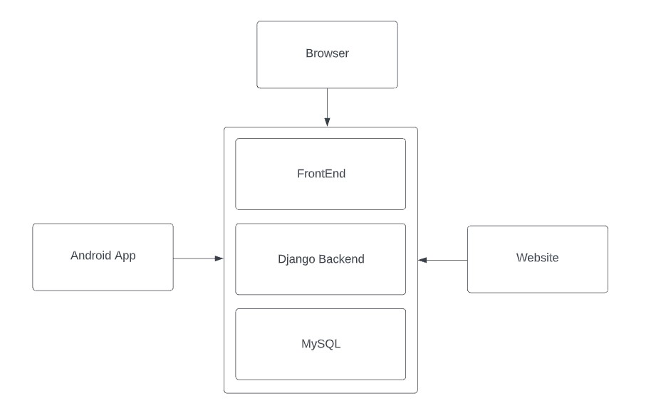
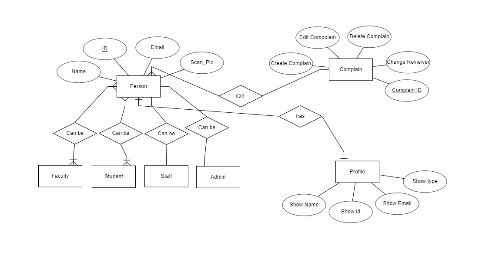

The goal of this document is to provide a comprehensive overview of the NSU Complain Portal. It will describe the system's purpose and characteristics, as well as the system's interfaces, what the system will do, the limitations that it must operate with, and how the system will react to external things. This document is intended for both the users and the developers of the system and will be proposed to Nabeel Mohammed Sir for its approval.

A login screen will be shown as a user open the app. There the user will able to enter the information manually and scan his/her ID card by
clicking on a button and then submit it. After login,
user will see the complain, logout menu. During login, app will detect the user type, whether the user is teacher, student or staff.
Unregistered students/faculties/staff can choose to regsiter account using their valid name, Scan photo of NSU ID card, NSU email address and password. System checks the validity of the e-mail address and creates an account. If the user credintials are valid, then they can access the homepage. The email address entered is registered before. The actor gets prompted with an error message "This e-mail exist already". The actor either chooses to use a valid email address or creates one first. The email address or password entered is/are incorrect. An error message pops up "Your email address or pasword is/are incorrect". The actor types in the correct information or chooses "forgot password" if he/she wants to.
From the figure above, it can be seen that there are Four classes (Student, Faculty, Staff and Admin) sharing common attributes and inherited from Person class that holds the shared attributes, they represent the actors of the system. And there is a Profile class which is linked to Person Class. Also, there is a Complain Class, which means studnets and faculty can create complain and Admin & Staff can edit or close the complain.

The NSU Complain APP will give users a variety of login and registration choices. Users will have the choice of manually registering or using Google account services, which will give the software with information from the user's Google account. Later on, Google account services can be expanded to allow users to log in using their Google accounts; in this scenario, users must be logged in or connect to their NSU email accounts in order for the app to authenticate them. Users can't login or register without NSU valid email. For Registration, the user will take a picture of their NSU ID. Users can upload the complain form. Then system admin can edit the form. Users must have to submit valid evidence for submitting the form. Users can upload any size of picture or voice documents. Check if the file is a valid document. If time favors us, we are planning to turn the system into a complete web-based application.